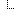

Name
Required
Extensible
Observation
status
Slices for category
category:laboratory
category:microbiologyStudies
code
Botswana AMR Antibiotic Susceptibility LOINC
subject
Slices for effective[x]
effective[x]:effectiveDateTime
Slices for value[x]
value[x]:valueQuantity
system
interpretation
Botswana AMR Interpretation
method
Botswana AMR AST Method

specimen
Documentation for this format


 Documentation for this format
Documentation for this format